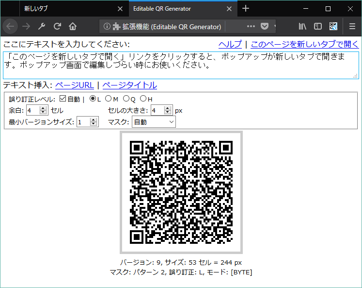
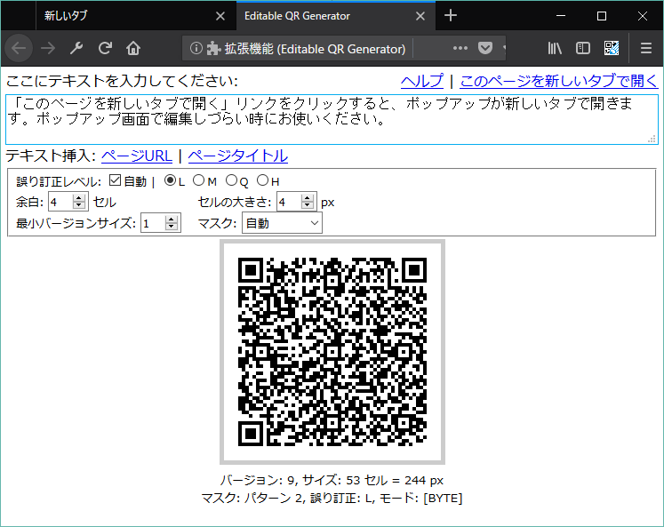

Editable QR Generator
ダウンロードしていただきありがとうございます。このアドオンは、好きな文字列からQRコードをオフラインで生成できるWeb extensionのアドオンです。
特徴
- 編集可能: 好きな文字列からQRコードを生成できます。
- 設定可能: 誤り訂正レベル、サイズ、マスクパターンなど、各種パラメータを設定可能です。
- オフライン: 一切外部との通信を行わず、ローカルのJavaScriptで動作します。
- 最小限の権限: このアドオンは、"activeTab"権限(パーミッション)しか使用していません。開いたページのURLとタイトルの取得のみに使用しています。manifest.jsonをご確認ください。
- Open Source: ソースコードはこちら https://github.com/xyx-is/Editable-QR-Generator 。プルリクエストお待ちしてます。
- UTF-8: UTF-8 エンコーディングをサポートしているため、日本語や絵文字を使用できます。（Shift-JISエンコードは使用できません。）
使い方
このアドオンをインストールすると、ツールバーボタンが追加されます。
ツールバーボタンをクリックするとポップアップが表示されるので、テキストボックスに文字列を入力してQRコードを生成してください。

現在のページのURLやタイトルを挿入する
「テキスト挿入」欄のリンクをクリックすることで、テキストエリアに現在のページのURLやタイトルを挿入することができます。
- 「ページURL」リンク
- 「テキスト挿入」欄に開いているページのURLを挿入します。
- 「ページタイトル」リンク
- 「テキスト挿入」欄に開いているページのタイトルを挿入します。
QRコード生成の設定

ポップアップのフォーム枠内の各種入力欄を設定することで、QRコード生成の設定をすることができます。
各設定欄の内容は、マウスオーバーしてツールチップを表示することで説明が表示されます。
- 誤り訂正レベル
-
誤り訂正レベルを L(Low), M(Medium), Q(Quartile), H(High) から選択します。
「自動」にチェックを入れている場合は、QRコードが大きくならない範囲で自動的に誤り訂正レベルを引き上げます。
- 余白
- 余白のサイズをセルの数で指定します。デフォルトは4です。
- セルの大きさ
- セルの大きさをピクセルで指定します。
- 最小バージョンサイズ
- QRコードのバージョンのサイズの最小値を指定します。QRコードのバージョンとは、QRコードのセルの数を表す指標で、バージョンが大きいほどQRコードのセルの数が多くなります。QRコードのバージョンの範囲は、1から40までです。
- マスク
- QRコードのマスクのパターンを、自動で指定させるか、0から7の範囲で指定します。
QRコードの画像を新しいタブで開く・保存する
生成されたQRコードの画像をクリックすることで、新しいタブでQRコードの画像を開くことができます。
新しいタブに表示されたQRコードの画像を右クリックすれば、画像を保存することが可能です。
Firefoxの場合は、ポップアップ内のQRコードの画像を右クリックすることで、直接画像を保存することも可能です。
ポップアップを新しいタブで開く
 

ポップアップ画面でEscキーを押すと閉じてしまうなど、ポップアップ画面のままではテキストエリアで編集が難しいことがあります。
「このページを新しいタブで開く」リンクをクリックすることで、現在開いているポップアップが新しいタブで表示されます。
バグの報告
バグの報告を検討していただきありがとうございます。このアドオンは、GitHubで開発しています。バグの報告は、GitHubのIssuesにご報告ください。よろしくお願いいたします。
License
このプロジェクトのライセンスはMIT Licenseです。第三者ライブラリは下記を確認してください。
第三者ライブラリ
このプロジェクトは以下の第三者ライブラリを使用しています。
Notice
「QRコード」は(株)デンソーウェーブの登録商標です。